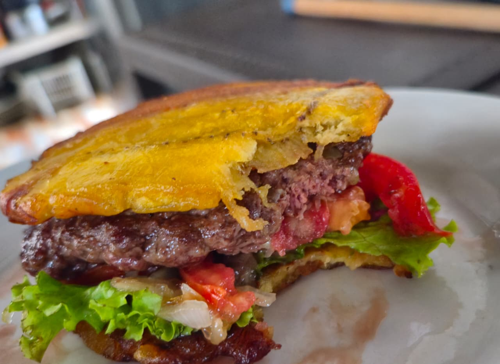
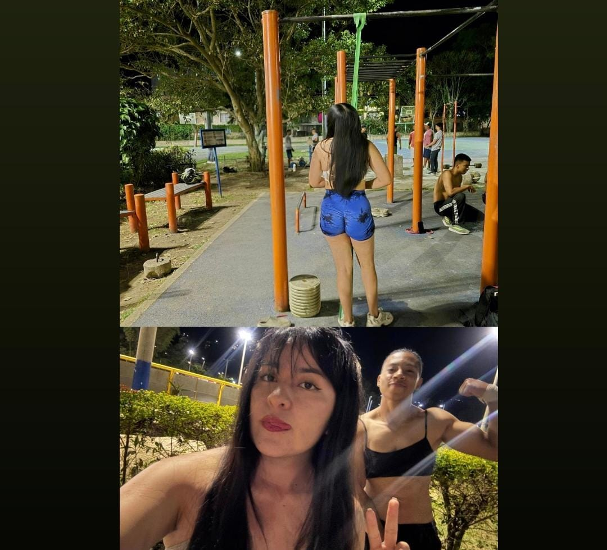

<section id="pasatiempos" class="section">
    <div class="container">
        <h2 class="section-title text-center mb-5">Pasatiempos</h2>
        <div id="hobbyCarousel" class="carousel slide" data-bs-ride="carousel">
            <!-- Indicadores -->
            <div class="carousel-indicators">
                <button type="button" data-bs-target="#hobbyCarousel" data-bs-slide-to="0" class="active" aria-current="true" aria-label="Cocinar"></button>
                <button type="button" data-bs-target="#hobbyCarousel" data-bs-slide-to="1" aria-label="Correr"></button>
                <button type="button" data-bs-target="#hobbyCarousel" data-bs-slide-to="2" aria-label="Calistenia"></button>
            </div>

            <!-- Slides -->
            <div class="carousel-inner rounded-4 shadow-lg">
                <!-- Slide 1: Cocinar -->
                <div class="carousel-item active">
                    <div class="row align-items-center p-4 p-md-5">
                        <div class="col-md-6 text-center mb-4 mb-md-0">
                            
                        </div>
                        <div class="col-md-6 text-center text-md-start">
                            <h3 class="hobby-title">Cocinar</h3>
                            <p class="hobby-description">
                                Me encanta crear recetas nuevas y experimentar con sabores. Cocinar es mi forma de expresar creatividad y cuidar de quienes amo.
                            </p>
                        </div>
                    </div>
                </div>

                <!-- Slide 2: Correr -->
                <div class="carousel-item">
                    <div class="row align-items-center p-4 p-md-5">
                        <div class="col-md-6 text-center mb-4 mb-md-0">
                            
                        </div>
                        <div class="col-md-6 text-center text-md-start">
                            <h3 class="hobby-title">Correr</h3>
                            <p class="hobby-description">
                                Correr me da claridad mental y fuerza física. Es mi momento de desconexión y conexión con la naturaleza.
                            </p>
                        </div>
                    </div>
                </div>

                <!-- Slide 3: Calistenia -->
                <div class="carousel-item">
                    <div class="row align-items-center p-4 p-md-5">
                        <div class="col-md-6 text-center mb-4 mb-md-0">
                            
                        </div>
                        <div class="col-md-6 text-center text-md-start">
                            <h3 class="hobby-title">Calistenia</h3>
                            <p class="hobby-description">
                                Entrenar con mi propio peso me ha enseñado disciplina y progresión. Me motiva ver cómo el cuerpo se transforma con constancia.
                            </p>
                        </div>
                    </div>
                </div>
            </div>

            <!-- Controles -->
            <button class="carousel-control-prev" type="button" data-bs-target="#hobbyCarousel" data-bs-slide="prev">
                <span class="carousel-control-prev-icon" aria-hidden="true"></span>
                <span class="visually-hidden">Anterior</span>
            </button>
            <button class="carousel-control-next" type="button" data-bs-target="#hobbyCarousel" data-bs-slide="next">
                <span class="carousel-control-next-icon" aria-hidden="true"></span>
                <span class="visually-hidden">Siguiente</span>
            </button>
        </div>
    </div>
</section>